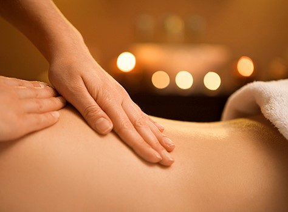
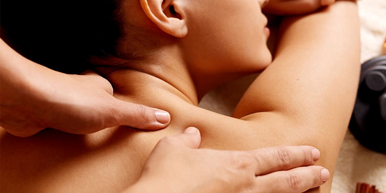
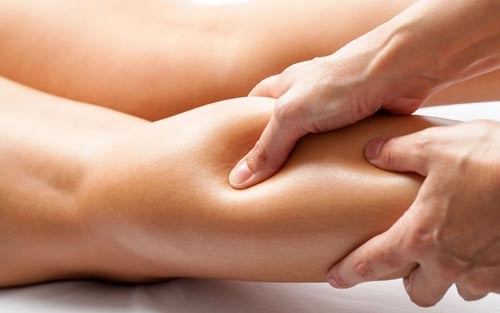
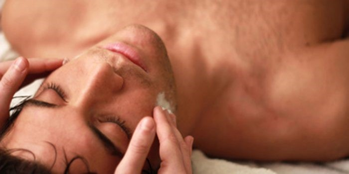
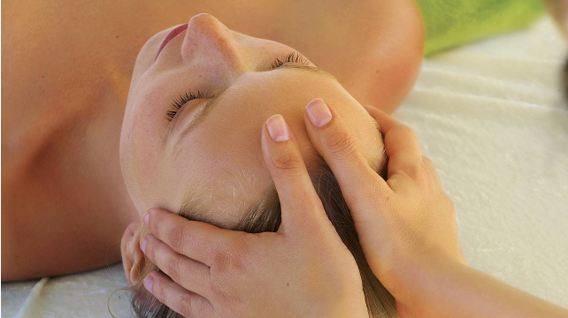
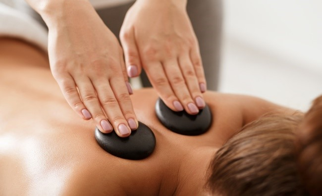
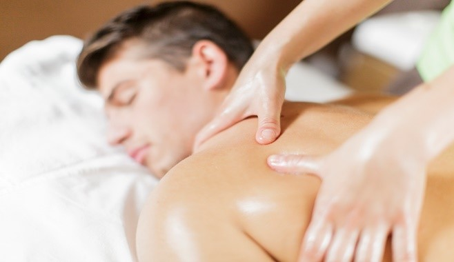
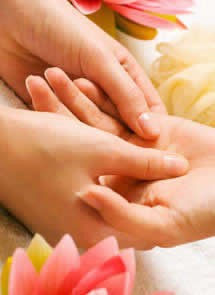
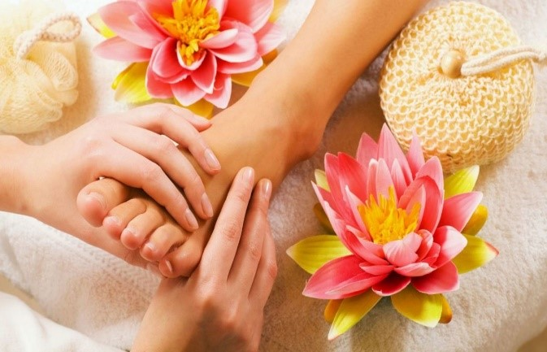

SERVICIOS (Terapias)
Masaje Relajación ……………………………………. 60 Min.
Masaje Descontracturante……………………….. 45 Min.
Masaje Deportivo……………………………………. 45 Min.
Masaje Craneal (Champi)………………………… 40 Min.
Masaje Piedras Calientes………………………… 45 Min.
Masaje Tailandés (thai)………………………….. 45 Min.
Reflexología (Manual o Podal)…………………. 40 Min.
Masaje Relajación
Esta terapia es aplicable a nivel corporal con técnicas suaves, presiones lentas y firmes. Dando énfasis en trapecio, partes del cuello y espalda. En esta sesión el objetivo es bajar la tensión muscular y aliviar el estrés.
Masaje Descontracturante
Esta Terapia es aplicable a nivel corporal con maniobras manuales con mayor presión y repetidas técnicas las cuales se realizan para obtener una afluencia de sangre en la zona y así lograr soltar las contracturas musculares.
Masaje Deportivo
Tiene como finalidad preparar al deportista antes y finalizado el esfuerzo físico realizado durante la competición de algún deporte.
Masaje Craneal (Champi)
Esta terapia se aplica en cráneo, cara, cuello y hombros (la tensión cervical es muy frecuente) el beneficio es mejorar la circulación y la oxigenación de estas zonas.
 Masaje Piedras Calientes
Esta Terapia es la combinación de masaje Terapéutico tradicional con la aplicación de piedras en distintas temperaturas sobre la piel (mayores beneficios es la reducción de los dolores crónicos –óseos)
Masaje Tailandés (Thai)
Este es un masaje de Estiramiento y profundidad se realiza en el suelo generalmente en tatami.
Reflexología; (Manual y Podal)
Es una terapia de zona, es decir que las distintas partes del cuerpo están reflejadas en las manos y pies, masajeando estas se reflejan los órganos, músculos y otras partes del cuerpo.
 